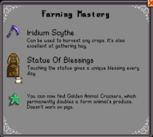

Warning: Spoilers  This page or section contains unmarked spoilers from update 1.6 of Stardew Valley. Players may want to avoid or be cautious toward reading this article/section.
|

|
Marked for deletion
This article or section has been marked for deletion for the following reason:
Merge into new page covering the entire Player Tab, new with v1.6
Last edited by Margotbean on 2024-03-22 17:46:36.
|
Farming Mastery can be obtained after the player gains access to the Mastery Cave and completing a level of mastery by obtaining 10,000 Mastery points. Farming is the central totem and is represented by a watering can. By unlocking this Mastery the player gains the Iridium Scythe, the Statue Of Blessings Recipe, and the Farming mastery power.
 Unlocked Farming Mastery Page
| Name
|
Rewards
|
Power
|

Farming Mastery
|
|
Iridium Scythe
|
Can be used to harvest any crops. It's also excellent at gathering hay.
|
You can now find Golden Animal Crackers, which permanently doubles a farm animal's produce. Doesn't work on pigs.
|
|
|
Statue Of Blessings Recipe
|
Touching the statue gives a unique blessing every day.
|
History